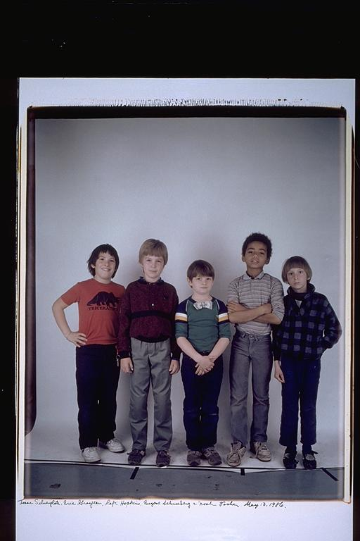

Eugene: "Issac's Dinasour Shirt" - May 13, 1986( I was 9)
If you look closely you'll know that this is an old picture because the
seamless doesn't cover the floor. I remember Eric, between Isaac and I was
Rafi's best friend and I used to be jealous of him. But then he moved back
to France(ha, ha!). Noah was always strange but I liked him, a real free
spirit. My mother used to always say that "Rafi looked like something out of
a Norman Rockwell painting." Man my sneakers were hurting bad. I have to
give the Dorfmans credit for making velcro sneaker the in thing to do:)
Isaac: Before "Jurassic Park," I had a fine appreciation for prehistoric reptiles. Rafi was always my idol when it came to humor (note the bow-tie). I was never close to Noah and Eric; what can you do. Eugene sure was a skinny little thing.
Aldo: This picture I actually remember the day, which is pretty strange for me. I have very few detailed, drawn out memories before 7 or 8. Just quick flashes of events. This is one of them, because of Rafi's "dollar tie." I remember watching Rafi put on the tie, it seemed so neat, and I remember wishing I had something neat to show people that I made.
